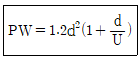
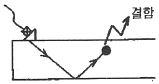
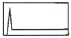
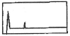
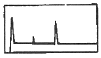
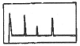

초음파비파괴검사산업기사 (2018-08-19 기출문제)
1과목: 비파괴검사 개론
1. 와류탐상에서 원주와 코일간의 거리가 변함에 따라 출력 지시가 변화하는 경우는?
- 충진율
- 리프트 오프
- 모서리 효과
- 끝부분 효과
(정답률: 72%)

2. 탄소강을 모재로 하여 SUS316 스텐인리스강으로 클래딩 된 클래드강의 압력용기에 대하여 클래드재의 잔존 두께를 측정하고자 한다. 가장 적합하다고 생각되는 측정방법은?
- 수직탐촉자를 사용하여 접촉법으로 이종금속의 계면에서 반사되는 반사신호로부터 측정한다.
- 수직탐촉자를 사용하여 국부수침법으로 이종금속의 계면에서 반사되는 반사신호로부터 측정한다.
- 분할형탐촉자를 사용하여 이종금속의 계면에서 반사되는 반사신호로부터 측정한다.
- 홀(Hall) 센서를 사용하여 자화시킨 탄소강에서의 누설 자속의 강도를 이용하여 측정한다.
(정답률: 59%)
3. 방사선투과시험으로 균열을 검출할 때의 신뢰도를 균열 감도와 선형 투과도계 감도에 의해 다음 식으로 나타낼 때 d가 1mm, 두께가 50mm인 강판 맞대기 용접부 내에 존재하는 폭 0.5mm인 균열이 방사선 투과사진에 나타나기 위해 균열의 깊이가 얼마 이상이어야 하는가? (단, P와 W는 단위 길이인 균열의 깊이와 폭이며, d는 방사선투과사진에 나타나는 투과도계의 wire의 직경, U는 투과사진의 불선명도이고 0.5mm이다.)

- 3.6mm
- 7.2mm
- 9.0mm
- 12.0mm
(정답률: 79%)
4. 다음 중 비파괴검사에 대한 설명으로 옳은 것은?
- 육안검사(VT)는 비파괴검사의 한 종류이다.
- 누설자속시험은 압력용기의 물 높이를 검지하는 데 적합한 시험방법이다.
- 자분탐상시험은 섬유강화 복합재료의 접촉불량부를 검출하는 데 적합하다.
- 침투탐상시험은 오스테나이트계 스테인리스강의 비드 중에 내재하고 있는 미세한 균열을 검출하는 데 적합한 시험방법이다.
(정답률: 91%)
5. 용접부 내부 결함의 상태를 가장 잘 측정할 수 있는 검사법은?
- 진공상자를 이용한 누설검사
- C-스캔을 이용한 초음파탐상검사
- 코일을 이용한 자분탐상검사
- 보빈 코일을 이용한 와전류탐상검사
(정답률: 90%)
6. 철강에 함유된 원소 중 5대 성분에 해당되지 않는 것은?
- C
- Si
- Mn
- Al
(정답률: 89%)
7. 결정구조에서 원자가 없는 공간격자로 된 격자 결함이며, 이러한 결함이 결정 내를 여러 개 통과하면 그 수만큼 원자 간격으로 미끄럼 변형이 일어나는 것을 무엇이라 하는가?
- 가공경화(work hardening)
- 전위(dislocation)
- 탄성(elasticity)
- 균열(crack)
(정답률: 83%)
8. Fe-C계 평형 상태도에서 Acm 선에 대한 설명 중 옳은 것은?
- δ 고용체의 액상선이다.
- α 고용체의 탄소포화점이다.
- γ 고용체에서 Fe3C가 석출하기 시작하는 선이다.
- γ 고용체의 액상선이며, 융액에서 γ 고용체가 정출하기 시작하는 선이다.
(정답률: 78%)
9. 전자부품의 숄더링(soldering)으로 가장 많이 사용하고 있으며, 약 450℃ 이하의 융점을 갖는 합금은?
- Cu - Sn계 합금
- Sn - Pb계 합금
- Cu - Pb계 합금
- Ni - Cr계 합금
(정답률: 63%)
10. 주조 시 주형에 냉금을 삽입하여 주물표면을 급냉시킴으로써 표면 경도를 증가시키고 내부는 강하고 인성이 있어 압연기 롤러, 기차 바퀴 등에 사용하는 내마모용 주철은?
- 백심가단주철
- 구상흑연주철
- 칠드주철
- Cr주철
(정답률: 80%)
11. 복합재료에 대한 설명으로 틀린 것은?
- 어떤 목적과 특성을 얻기 위하여 2종 또는 그 이상의 다른 재료를 서로 합하여 하나의 재료로 만든 것을 복합재료라 한다.
- 복합재료는 일반적으로 비강도와 비탄성률이 낮기 때문에 항공기 부품이나 소재 경량화재료에 활용되고 있다.
- 복합재료의 개념을 바탕으로 실용화되고 있는 재료에는 자동차 타이어, 입자분산강화합금 등이 있다.
- 복합재료에는 클래드재료, 섬유강화재료, 분산강화재료 등이 있다.
(정답률: 81%)
12. 500~600℃까지 가열해도 뜨임 효과에 의해 연화되지 않고 고온에서도 경도의 감소가 적은 것이 특징이며, 대표적 조성이 18%W - 4%Cr - 1%V 인 강은?
- 다이스강(Dies Steel)
- 게이지용강(Gauge Steel)
- 스테인리스강(Stainless Steel)
- 고속도공구강(High Speed Tool Steel)
(정답률: 86%)
13. 규소를 넣어 주조성을 개선하고 구리를 넣어 절삭성을 향상시킨 Al-Cu-Si계 합금은?
- 톰백
- 알루멜
- 크로멜
- 라우탈
(정답률: 80%)
14. 수소연료 전지용 전극이 가져야 할 특징을 설명한 것 중 틀린 것은?
- 전해액 중에서 장기간 화학적으로 안정될 것
- 넓은 온도범위에서 방전용량이 변화하지 않을 것
- 수소의 저장ㆍ방출을 반복한 후에도 저장량이 저하되지 않을 것
- 분극을 적게 하기 위하여 전극자체의 저항분극을 크게 할 것
(정답률: 79%)
15. A, B 2종류의 금속이 고용체를 만들 때 전기저항이나 강도의 증가가 최대가 되는 비율은?
- 비율과 관계없다.
- A : B = 50 : 50
- A : B = 30 : 70
- A : B = 20 : 80
(정답률: 84%)
16. 피복 아크 용접 시 아크전압이 30V, 아크전류가 150A, 용접속도가 10cm/min 일 때 용접의 단위 길이 1cm당 발생하는 전기적 에너지 즉, 용접 입열량은 몇 J/cm 인가?
- 17000
- 27000
- 37000
- 47000
(정답률: 86%)
17. 아크 용접기의 특성 중 부하 전류가 증가하면 단자 전압이 저하되는 것을 무엇이라 하는가?
- 수하 특성
- 상승 특성
- 정전압 특성
- 자기 제어 특성
(정답률: 82%)
18. 라미네이션 결함이 발생되는 원인으로 가장 관계가 있는 것은?
- 시공 불량
- 재료 불량
- 설계 불량
- 용접성 불량
(정답률: 69%)
19. 맞대기 용접, 필릿 용접 등의 비드표면과 모재와의 경계부에 발생하는 균열이며, 구속응력이 클 때 용접부의 가장자리에 발생하여 성장하는 균열은?
- 토 균열
- 설퍼 균열
- 루트 균열
- 크레이터 균열
(정답률: 76%)
20. 불활성 가스 금속 아크 용접의 특징으로 틀린 것은?
- 아크 자기제어 특성이 있다.
- 정전압 특성 또는 상승 특성의 직류용접기가 사용된다.
- 전류밀도가 낮아 3mm 미만의 박판용접에 능률적이다.
- 알루미늄이나 스테인리스강 용접에 많이 이용한다.
(정답률: 67%)
2과목: 초음파탐상검사 원리 및 규격
21. 탐촉자에서 초음파빔의 퍼짐은 주로 무엇에 의해 좌우되는가?
- 진동자 재질의 종류
- 주파수 및 진동자의 크기
- 펄스의 길이
- 접촉매질의 종류
(정답률: 87%)
22. 재료의 음향임피던스가 갖는 주된 요소는 무엇을 결정하는 데 사용되는가?
- 재료 표면에서의 음석
- 경계면에서의 거칠기
- 재료 내에서의 빔의 확산
- 경계면에서 통과 및 반사되는 에너지의 양
(정답률: 79%)
23. 재료 내부의 전위, 균열 등의 결함 생성 및 변위 발생 시 발생하는 탄성파를 검출하여 결함의 성질과 상태를 평가하는 비파괴 시험 방법은?
- UT
- ECT
- AE
- SM
(정답률: 70%)
24. 경사각 초음파탐상시험 시 반드시 주의해야 할 현상이 아닌 것은?
- 지연에코(delayed echo)
- 잔향에코(ghost echo)
- 저면에코(back echo)
- 원주면에코
(정답률: 77%)
25. 초음파탐상 시 경사각탐상에 대한 설명으로 올바른 것은?
- 용접 균열인지 아닌지의 판정을 위해서는 결함에코의 빔 진행거리만을 측정한다.
- 용접비드에서의 에코는 결함에코보다 항상 작게 나타나기 때문에 무시해도 좋다.
- 결함지시길이는 탐사방향을 바꾸어도 변하지 않는다.
- 내부 용입불량의 검출에는 탠덤법이 유효하다.
(정답률: 73%)
26. 동일한 조건에서 미세한 결함 길이를 정확히 측정하는 데 사용되는 측정 방법은?
- 6dB Drop법
- 20dB Drop법
- DAC Drop법
- 최대에코진폭법
(정답률: 66%)
27. 제2차 임계각(second critical angle)에서 볼 수 있는 파형은?
- 종파
- 횡파
- 표면파
- 판파
(정답률: 64%)
28. 알루미늄 피검체의 탐상 시 초음파빔의 분산각을 35°로 하려고 한다. 탐촉자의 직경은 약 얼마인가?(단, 알루미늄의 종파음속은 6500m/sec, 주파수는 1MHz이다.)
- 13mm
- 13cm
- 60cm
- 60mm
(정답률: 67%)
29. 시험체 내에서 초음파 전파특성이 탐상방향에 따라 차이가 있는 경우 재질이 이방성을 갖는다고 설명할 수 있는데, 이러한 재질의 이방성으로 나타날 수 있는 현상이 아닌 것은?
- 초음파의 속도 변화
- 초음파의 산란 및 감쇠 변화
- 다수의 미세 에코 발생
- 결함지시 검출능력 향상
(정답률: 64%)
30. 강(steel)의 두께가 2,5cm인 제품을 공진법으로 초음파탐상검사할 때, 기본 공진 주파수는? (단, VL=5900m/s이다.)
- 236kHz
- 23.6kHz
- 118kHz
- 11.8kHz
(정답률: 53%)
31. 보일러 및 압력용기에 대한 표준초음파탐상검사 (ASME Sec.V, Art.23 SA-435)를 위한 표준규격에서 압연된 완전탈산(killed) 탄소강판 및 합금강판의 적용 두께의 기준은?
- 6.25mm 이상
- 12.5mm 이상
- 25.0mm 이상
- 50.0mm 이상
(정답률: 58%)
32. 알루미늄의 맞대기용접부의 초음파경사각탐상 시험방법(KSB 0897)에 따른 시험결과의 분류에서 모재의 두께가 40mm이고, 1류의 판정이 내려진 경우 허용되는 홈의 최대 길이는 얼마 이하인가? (단, 분류는 B종 홈인 경우이다.)
- 10mm
- 20mm
- 30mm
- 40mm
(정답률: 77%)
33. 보일러 및 압력용기의 재료에 대한 초음파탐상검사(ASME Sec.V Art.5)에 따라 주조품을 탐상검사할 때 수직탐촉자를 사용하고, 특수한 경우에는 경사각 탐촉자를 추가로 사용하는데 이 특수한 경우에 대한 설명으로 옳은 것은?
- 자동 DAC 장치를 사용할 때
- 사용주파수가 0.5MHz 일 때
- 주조품의 재질이 알루미늄 일 때
- 주조품의 전면과 후면과의 각도가 15°를 넘을 때
(정답률: 81%)
34. 강 용접부의 초음파탐상 시험방법(KS B 0896)에서 경사각탐상에 사용하는 모재 판두께에 대한 공칭주파수로 적당한 것은?
- 50mm 이하 : 5MHz
- 75mm 이하 : 2MHz 또는 5MHz
- 100mm 이상 : 2MHz 또는 5MHz
- 150mm 이상 : 2MHz 또는 5MHz
(정답률: 75%)
35. 강 용접부의 초음파 탐상시험방법(KS B 0896)에 의한 원둘레이음 용접부의 초음파 탐상에 사용하는 대비 시험편의 곡률반지름은 시험체 곡률 반지름의 몇 배로 하여야 하는가?
- 1.0배 이상 1.5배 이하
- 0.9배 이상 1.5배 이하
- 1.0배 초과 1.5배 미만
- 0.9배 초과 1.4배 미만
(정답률: 80%)
36. 강 용접부의 초음파탐상 시험방법(KS B 0896)에서 수직탐촉자에 필요한 성능에 대한 설명으로 올바른 것은?
- 공칭 주파수 2MHz 탐촉자의 원거리 분해능은 10mm 이하이다.
- 공칭 주파수 5MHz 탐촉자의 원거리 분해능은 6mm 이하이다
- 공칭 주파수 2MHz 탐촉자의 불감대는 20mm 이하이다.
- 공칭 주파수 5MHz 탐촉자의 불감대는 10mm 이하이다.
(정답률: 57%)
37. 강 용접부의 초음파탐상시험방법(KS B 0896)에서 직접접촉용 1진동자 수직탐촉자의 송신펄스폭에 따른 불감대 측정에서 빔노정이 몇 mm이상인 경우 규정을 하지 않는가?
- 50mm
- 30mm
- 20mm
- 10mm
(정답률: 63%)
38. 초음파 펄스 반사법에 의한 두께 측정방법(KS B ⑤36)에서 측정면의 거칠기가 25~100S 일 경우 글리세린 수용액의 농도는?
- 12.5% 이상
- 25% 이상
- 50% 이상
- 75% 이상
(정답률: 65%)
39. 초음파 탐촉자의 성능측정 방법(KS B ⑤35)에서 굴절각이 75°인 경사각 탐촉자로 굴절각을 측정하려 할 때 표준시험편 STB-A1에 사용되는 관통 구멍의 지름은 얼마인가?
- 1mm
- 1.5mm
- 4mm
- 50mm
(정답률: 67%)
40. 보일러 및 압력용기에 대한 초음파탐상검사(ASME Sec.V Art.4)에 따라 곡률이 508mm(20인치) 이하인 시험대상물을 검사하기 위해 곡률이 254mm(10인치)인 기본교정시험편을 제작하였다. 이 시험편을 사용하여 검사할 수 있는 시험 대상물의 곡률반경 범위로 적합한 것은?
- 229mm(9인치) 이상 381mm(15인치) 이하의 곡률을 가진 것은 검사 가능하다.
- 229mm(9인치) 미만의 곡률을 가진 것은 검사 가능하다.
- 381mm(15인치) 초과하는 곡률을 가진 것은 검사가능하다.
- 381mm(15인치) 초과하고 508mm(20인치) 미만인 것은 검사가능하다.
(정답률: 71%)
3과목: 초음파탐상검사 시험
41. 진동자의 크기가 일정하고 주파수를 증가시켰을 때 변하는 것은 무엇인가?
- 근거리 분해능이 증가한다.
- 근거리 음장이 증가한다.
- 지향각이 증가한다.
- 펄스폭이 증가한다.
(정답률: 72%)
42. 초음파탐상 결과를 화면에 표시하는 방법 중 MA Scope 표시 방법이란?
- 횡축에는 전파시간, 종축에는 에코의 크기를 나타내는 방법
- 탐촉자 위치를 횡축, 시간 또는 반사원의 깊이를 종축에 잡고 시험체의 단면을 표시하는 방법
- 탐상면 전체에 걸쳐 탐촉자를 주사하고 결함에코가 발생한 탐촉자 위치로 표시하는 방법
- 탐촉자를 전후 주사시켰을 때 기본표시를 중첩하여 하나의 도형으로 표시하는 방법
(정답률: 60%)
43. 초음파의 감쇄가 적은 일반 강재를 종파 경사각탐촉자를 사용하여 검사할 경우 가장 주의해야하는 사항은?
- 펄스에코가 높기 때문에 게인 조정에 주의한다.
- 감쇄가 적기 때문에 주파수 선택에 주의한다.
- 이면에서 반사되어 횡파로 모드 변환하기 때문에 직사법만 사용해야한다.
- 횡파보다 속도가 빠른 종파만 전파되기 때문에 시간축 직선성에 주의해야 한다.
(정답률: 41%)
44. 그림과 같이 경사각법으로 검사를 실시했을 때 CRT에 나타나는 탐상도형으로 옳은 것은?





(정답률: 65%)
45. 적산효과란 어떤 시험체의 초음파탐상검사 시 나타날 수 있는 현상인가?
- 판재
- 맞대기 용접된 용입부
- 대형 주강품
- 형상이 복잡한 단조품
(정답률: 64%)
46. 단강품에 대해서 수직으로 초음파 탐상할 때 잡음신호가 크고 저면에코가 보이지 않을 경우에 합당한 조치는?
- 탐상 감도를 높게 한다.
- 측정범위를 가급적 좁게 한다.
- 더 낮은 주파수의 탐촉자를 사용한다.
- 리젝션을 사용한다.
(정답률: 69%)
47. 다음 중 초음파빔 분산각을 구하기 위한 식은? (단, Φ는 초음파빔의 분산각이다.)
- sinΦ ≒ 1.2 × 진동자 직경 × 파장
- sinΦ ≒ 주파수 × 파장 ÷ 진동자 직경
- sinΦ ≒ 주파수 × 파장
- sinΦ ≒ 1.2 × 파장 ÷ 진동자 직경
(정답률: 71%)
48. 점집속에 사용되는 음향집속 방법이 아닌 것은?
- 구면 진동자식
- 렌즈식
- 평면 진동자식
- 반사식
(정답률: 57%)
49. 주ㆍ단강품의 초음파 탐상감도를 조정할 때 표준시험편을 사용하여 그 표준구멍으로부터의 에코가 정해진 높이가 되도록 탐상기의 감도를 조정하는 시험편 방식의 장점으로 볼 수 없는 것은?
- 탐상감도를 나타내기가 용이하다.
- 공정간에 탐상한 상호의 데이터들의 비교가 비교적 용이하다.
- 시험편과 시험체의 감쇠 차이에 의한 결함에코 높이 차이의 보정이 불필요하다.
- 시험체와 동일한 종류의 강이며 검출목적에 맞는 깊이 및 크기의 인공결함을 임의로 만들 수 있다.
(정답률: 71%)
50. 지름이 작고 긴 봉강을 길이 방향에서 종파로 초음파 탐상 검사할 때 1차 저면 반사파(B1)와 2차 저면 반사파(B2) 사이에 나타나는 간섭파형은 무엇 때문에 일어나는가?
- 잡음
- 전기적 간섭 신호
- 표면파
- 파형변이
(정답률: 79%)
51. 초음파탐상용 탐촉자에서 진동자 뒷면 흡음재의 기능에 대한 설명으로 틀린 것은?
- 에너지를 흡수하게 한다.
- 진동자에 진동을 잘 멈추게 한다.
- 진동자와 흡음재의 접착이 나빠지면 펄스폭이 좁아진다.
- 진동자와 흡음재 사이의 접착이 나빠지면 감도가 나빠진다.
(정답률: 62%)
52. 알루미늄의 음향임피던스는 얼마인가?(단, 알루미늄 밀도 : 2700kg/m3, 종파속도 : 6320m/sec이다.)
- 8.5×106kg/m2ㆍsec
- 17×106kg/m2ㆍsec
- 8.5×107kg/m2ㆍsec
- 17×107kg/m2ㆍsec
(정답률: 67%)
53. 다음 중 결함의 크기 측정에 이용되는 방법이 아닌 것은?
- DAC 곡선
- 20dB법(20dB drop법)
- AVG 곡선
- 게이트 활용 측정법
(정답률: 74%)
54. 초음파탐상검사에서 집속형 수직탐촉자를 사용함으로써 얻을 수 있는 이점이 아닌 것은?
- 불감대가 없으므로 표면에 근접한 결함검출에 유용하다.
- 결함위치 및 크기를 정밀하게 측정할 수 있다.
- 임상에코가 나타나는 재료의 탐상시 S/N비를 향상시킬 수 있다.
- 작은 결함으로부터 높은 에코를 얻을 수 있다.
(정답률: 51%)
55. 초음파탐상용 STB-A1 표준시험편으로 확인할 수 없는 것은?
- 측정 범위의 조정
- 경사각 탐촉자의 굴절각 측정
- 경사각 탐촉자의 분해능 측정
- 경사각 탐촉자의 입사점 결정
(정답률: 75%)
56. 두꺼운 재료에 대해서 수직 초음파 탐상을 수행할 경우 다중 반사신호로 인하여 잔향에코가 신호에 섞이는 현상이 나타날 수 있다. 이러한 경우 해결방법으로 적절한 것은 ?
- 탐상기의 댐핑을 조절한다.
- 탐촉자를 교체한다.
- 탐상기의 게인을 조절한다.
- 탐상기의 펄스 반복주파수를 낮춘다.
(정답률: 61%)
57. 강재만 측정할 수 있는 두께계로, 음속이 다르다고 생각되는 특수 재료의 두께를 측정하였다. 그 재료의 음속을 구하는 데 필요한 산출식은?
- 특수 재료의 음속 = 강재의 음속 + 음속보정계수
- 특수 재료의 음속 = 음속보정계수 - 강재의 음속
- 특수 재료의 음속 = 강재의 음속 × 음속보정계수
- 특수 재료의 음속 = 강재의 음속 ÷ 음속보정계수
(정답률: 80%)
58. 다음중 탐상 감도가 가장 우수한 주파수는?
- 1MHz
- 2MHz
- 2.25MHz
- 4MHz
(정답률: 70%)
59. 초음파탐상시 표준시험편 또는 대비시험편의 용도의 적합하지 않은 것은?
- 측정범위의 조정
- 탐상감도의 조정
- 실측 주파수의 측정
- 탐상장치의 점검에 필요한 탐상장치의 특성 및 성능 측정
(정답률: 80%)
60. 수직탐상 시 결함으로부터의 에코높이가 스크린상 40%의 높이에 표시되었다. 이결함 에코를 80%로 맞추고자 할 경우 옳은 방법은?
- 탐촉자 압력을 세게 한다.
- 게이트 회로를 조정한다.
- 스윕지연 회로를 조정한다.
- 게인 조정기를 조정한다.
(정답률: 82%)